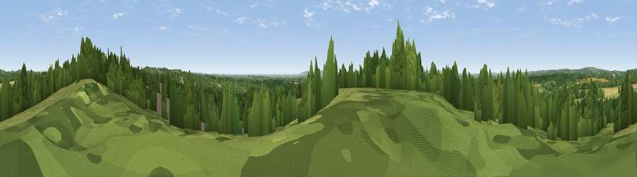

Viewpoint near Cross in Hand
#25642 in England · top 34% of its area beats it · near Cross in HandThe view, rendered

A 360° render of this exact spot computed from the terrain model, tree cover and land cover — summer colours, afternoon light, calibrated against photographs of famous viewpoints. Real trees, hedges and buildings will differ in detail.
The panorama
Grey silhouette: terrain skyline in each direction (720 bearings, Earth curvature and refraction included). Dashed green: skyline with trees (+15 m) and buildings (+8 m) as obstacles. Blue strip: how far the ground is visible on each bearing.
Where the view opens
Wedge length = distance to the farthest visible ground on that bearing (vegetation-aware). Rings at 10, 25 and 50 km.
What fills the view
48% woodland · 46% grassland · 4% cropland · 2% built-up
Angular shares of the visible panorama (visual magnitude), not map area. Landscape diversity 0.41 (0–1 Shannon).
Key numbers
More beautiful places nearby
The staircase of upgrades: each row has a higher view potential than everything closer. Driving times are estimates from straight-line distance, calibrated against real road routing — check an actual route before setting out.
| Place | Direction | Drive | Score |
|---|---|---|---|
| Viewpoint near Cross in Hand | NE · 0 km | ~1 min | 54.0 |
| Viewpoint near Cade Street | E · 6 km | ~13 min | 56.7 |
| Viewpoint near Rushlake Green | ESE · 9 km | ~17 min | 57.4 |
| Brightling Obelisk [Brightling Down] | E · 11 km | ~22 min | 69.1 |
| Viewpoint near Glynde | SW · 16 km | ~28 min | 70.8 |
| Cliffe Hill | SW · 16 km | ~29 min | 79.3 |
| Firle Beacon | SSW · 17 km | ~30 min | 88.9 |
| Viewpoint near Niton | WSW · 115 km | ~139 min | 89.2 |
50.97215, 0.21377 · source: screening · position refined by local search. Computed location — check access rights before visiting.